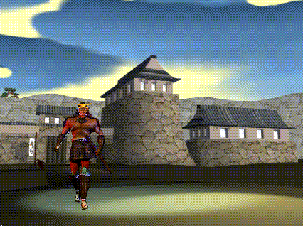
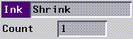
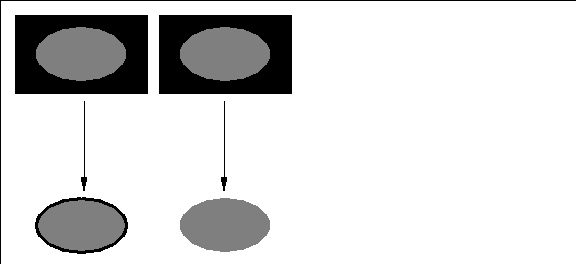
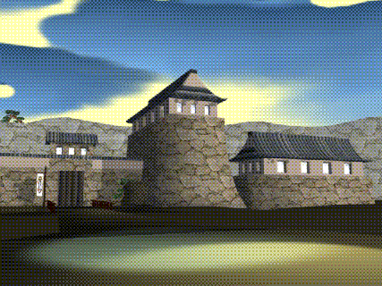
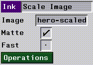
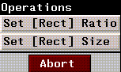
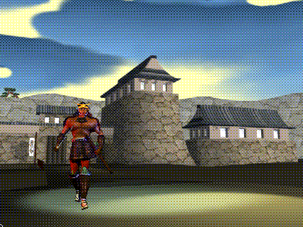

[N-World Contents] [Book Contents] [Prev] [Next] [Index]
Compositing Images
In this chapter, we'll look at how to use N-Paint to composite one image onto another.

Eliminating Matte Lines
Sometimes when you composite an image, slight mismatches between the matte and the boundaries of the image result in matte lines showing up in the composited image. These lines are areas of the background which are composited along with the image.
Using the shrink ink, you can slightly reduce the size of the matte with a quick operation to ensure that only image (and no background) are composited onto the image.
Here's an example:
1. Load the following images:
/usr/local/ngc/demo/images/hero-scaled.rgba
/usr/local/ngc/demo/images/background.rgb
2. (CLICK-L) on File>Select.
- Select hero-scaled from the pop-up list of images which appears.
3. (CLICK-L) on Add and View in the matte modes section of the menu.
- Note that the matte fits almost exactly over the entire character, perhaps even spilling over a little bit onto the black background. If the matte covers part of that black background, it will be pulled through during the composite operation, resulting in black lines around our composited image.
4. Select the Quad tool and the Shrink ink.
5. Set Count to 1 In the Shrink Ink parameters section of the menu.

Figure 4.1 The Shrink ink parameters menu
6. (CLICK-L) on Do Full Canvas.
- The shrink ink "shrinks" light areas in an image. Turning "Add" on means we're actually painting onto the matte, changing the matte itself.
- Suppose, for example, that our initial matte is slightly larger than the oval shown in the left in Figure 4.2; when we composite, a black outline will be pulled through. If we slightly reduce the size of the matte, only image is pulled through:

Figure 4.2 Left, compositing with unshrunk matte; right with "shrunk" matte. Note the edge around the image on the left, with a larger matte.
- Remember, the concept here is to "shrink" the matte down to be slightly smaller than the image you are going to composite. This ensures that only the image (and no background) is composited.
- You can repeat this process, if necessary, to incrementally shrink the matte until the image composites correctly.
Using the Scale Image Ink
You can use the scale image ink to composite a foreground image onto a background image. Usually, you'll use this ink with a shape tool like the Quad tool. You can configure the ink to maintain the foreground image's aspect ratio and size, or you can interactively change both of these parameters.
7. (CLICK-L) on File>Select, and select background.
- The background image should appear on the canvas:

Figure 4.3 The background image
8. Select the Quad tool and the Scale Image ink.
- The Scale Image ink parameters menu appears:

Figure 4.4 The Scale Image ink parameters menu
9. (CLICK-L) on the Image field, and select the hero-scaled image from the pop-up menu which appears.
10. (CLICK-L) on the Operations button.
- The Operations pop-up menu appears:

Figure 4.5 The Scale Image ink operations menu
11. (CLICK-L) on Set [Rect] Ratio
- This action constrains the Quad tool to use the foreground image's aspect ratio. Doing this means that there will be no distortion as you scale the image.
12. (CLICK-L) on Matte and Fast
13. Draw a rectangle on the canvas with mouse.
- The rectangle defines the area through which the image will be composited.
- As soon as you (CLICK-L) to close the rectangle, the image will appear on the background image.

Figure 4.6 The composited image
If both your source and your target images are of the same size, you can use the Do Full Canvas option to composite the two images, rather than using the rectangle tool.
Compositing a series of images (e.g., a character walking across a background) can be done by creating a script in N-Dynamics. This procedure is described later in this guide and also in the N-Dynamics Tutorial.
Congratulations!
You've now learned how to composite one image over another, and how to modify your matte before doing so to ensure optimal results. As mentioned above, you can composite series of images by creating a script in N-Dynamics.
[N-World Contents] [Book Contents] [Prev] [Next] [Index]
 Another fine product from Nichimen documentation!
Another fine product from Nichimen documentation!
Copyright © 1996, Nichimen Graphics Corporation. All rights
reserved.